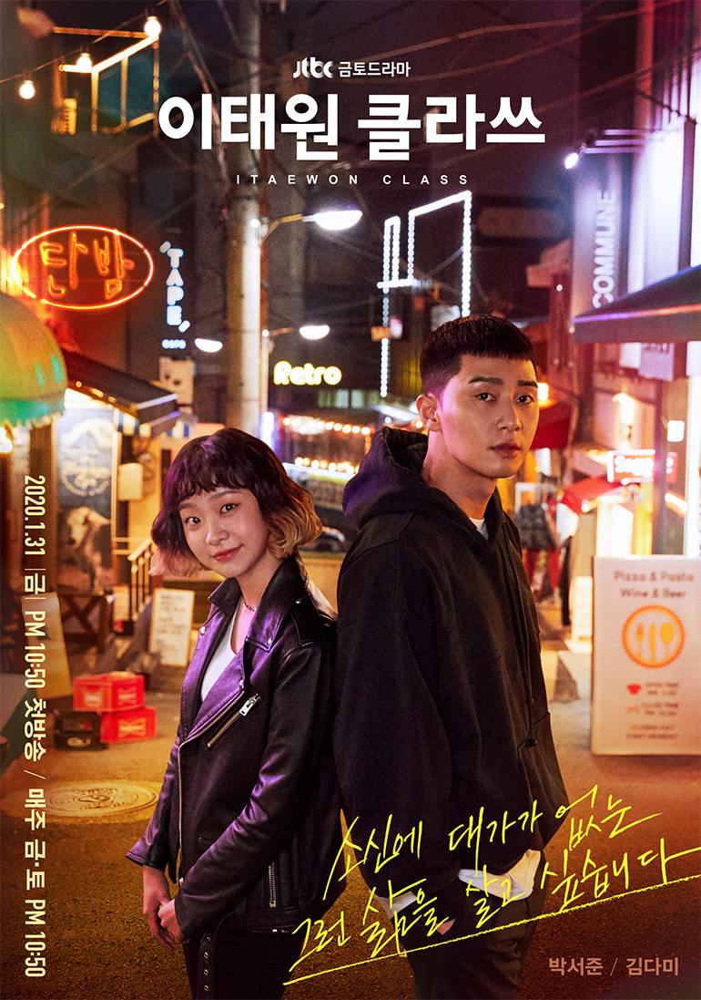
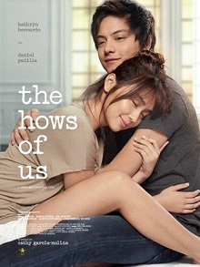
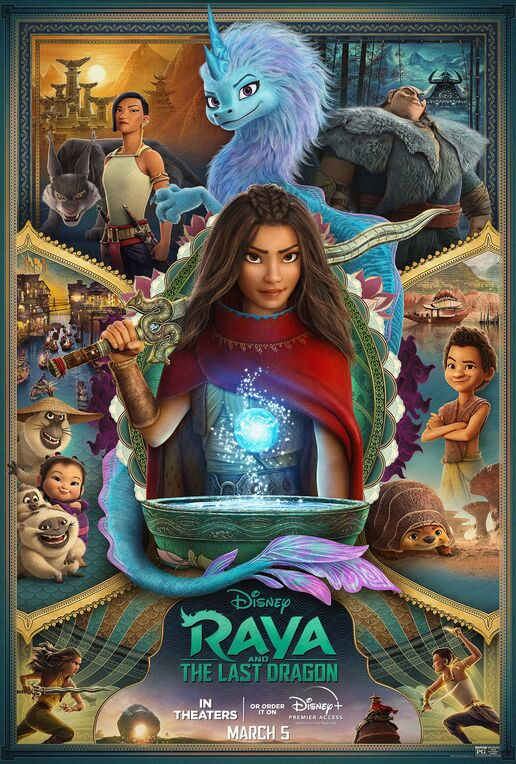

Movies and TV series affect many of us powerfully because the combined impact of images,
music, dialogue, lighting, sound and special effects can elicit deep feelings and help us reflect
on our lives. They can help us to better understand our own lives, the lives of those around us and
even how our society and culture operate.
TV Series
Itaewon Class

Itaewon Class
(Korean: 이태원 클라쓰; Hanja: 梨泰院 클라쓰; RR: Itaewon Keullasseu) is a 2020 South Korean television series
starring Park Seo-joon, Kim Da-mi, Yoo Jae-myung and Kwon Nara. Based on the webtoon of the same name, it is
the first series to be produced by the film distribution company Showbox. It aired on JTBC in Korea from
January 31 to March 21, 2020, and is streaming worldwide on Netflix. The series won Best Drama Series at the
25th Asian Television Awards. The story follows the life of Park Sae-Ro-Yi (Park Seo-Joon) who has a series of
misfortunes but tries to overcome it all by having a dream, a goal he works hard to achieve. A dream
which everyone feels is unattainable.
Itaewon Class Trailer
Start-Up
Start-Up
(Korean: 스타트업; RR: Seutateueop) is a South Korean television series starring Bae Suzy, Nam Joo-hyuk,
Kim Seon-ho and Kang Han-na. The series revolves around a woman who has dreams of becoming an
entrepreneur like Steve Jobs, and her love triangle between a man who is secretly her first love and
another man who is pretending to be her first love. It aired on tvN from October 17 to December 6, 2020,
every Saturday and Sunday at 21:00 (KST). It is available for streaming on Netflix.
Start-Up Trailer
Movies
The Hows of Us

The Hows of
Us is a 2018 Philippine romantic drama film directed by Cathy Garcia-Molina and starring Kathryn Bernardo
and Daniel Padilla. They were recognized as Phenomenal Box Office Stars and was given the Golden Jury
Award and honors at the 50th Guillermo Box Office Entertainment Awards and received the prestigious
Camera Obscura Award for its phenomenal success worldwide.
The Hows of Us Trailer
Raya the Last Dragon

Raya and the
Last Dragon is an American animated film produced at Walt Disney Animation Studios and distributed
by Walt Disney Studios Motion Pictures. It was released on March 5, 2021 and is the 59th animated
feature in the Disney Animated Canon. The film follows Raya, a warrior princess who must find the
fabled last dragon in order to save her divided home world from a ravenous plague. Throughout her
journey, Raya traverses the various kingdoms of Kumandra, with an eccentric band of misfits by her
side. All the while, they must evade the clutches of Raya’s longtime nemesis, Namaari. The setting
of Raya and the Last Dragon takes inspiration from Southeast Asian cultures and regions. The
titular dragon, Sisu, is modeled after the Nāga, a serpentine race found in Hinduism, Buddhism and
Jainism. To respectfully pay tribute to the region, the studio established a Southeast Asia Story
Trust—a coalition of specialists of various fields, including visual anthropology, linguistics,
botany, choreography, architecture, martial artists.